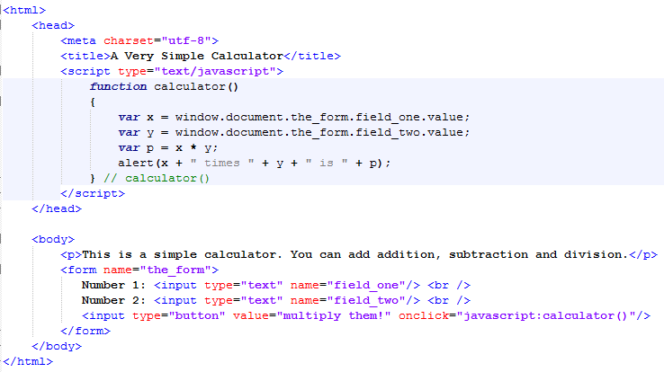
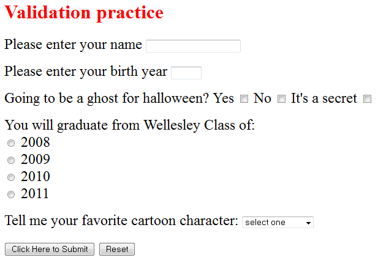

The objectives of this lab are to:

Please add ADDITION, SUBTRACTION, and DIVISION functions.

Download formValidation.html from Blackboard.
checkNameYear() that, in addition to validating that the name field is filled out,
also validates that the birth year is 4 digits long. Hint: you may need to use a cascading if in checkNameYear().easyform.easyform.
In English, the test of the if is broken into two parts: if (A OR B) where A is "if no boxes are checked at all"
and B is "if more than 1 box is checked". If either of these cases is true, then it is not the case that one and
only one box was checked, so we issue and alert and return false. Otherwise (else),
we thank the user and return true.
var pattern = /^-?\d+(\.\d+)?$/;^-? | At the start of the string you may have a minus sign |
\d+ | Then you will have one or more digits |
(\.\d+)? | Then, optionally, a decimal point followed by one or more digits |
$ | Then the string ends. |
var a = pattern.test(getElementById("id").value) and check to see if a contains "true" or "false".document.getElementById("id").value.length. Make sure your textbox has an identifier ("id"). Use document.write() to print out the length of the text string.indexOf allows us to determine the position of a character (or even a substring) within a string of text. For example var a = "1 1 was a racehorse, 2 2 was 1 2. 1 1 1 1 race 1 day, 2 2 1 1 2.";
var b = a.indexOf("w");b is now 4 (remember JavaScript begins counting from 0).indexOf to determine its position.if statement to determine if the password in insufficient and, if so, you may like to notify the reader by means of an alert box.